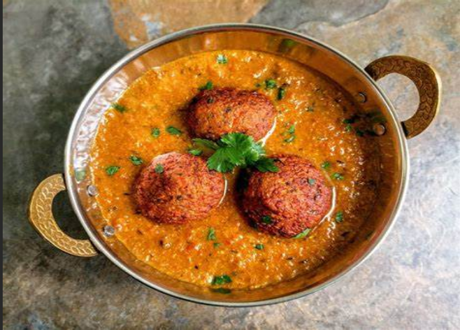

Veg Maratha

Veg Maratha is a dish, which is very common in Maharashtra, India.
It is prepared in each and every house in Maharashtra. It is categorized under the main course.
It is generally spicy and tastes awesome. It is a combination of veg spicy koftas n spicy gravy prepared seperately.
While serving we add the koftas in hot gravy.. Veg Maratha is eaten with paratha, roti, naan or any type of Indian bread.
Ingredients
- Ings for the koftas :potatoes boiled m grated 2-3 nos
- carrots grated 2 nos
- beetroot grated 1 nos
- capsicum finely chopped 2 nos
- paneer grated 50 gms
- besan (or u cn even use 2_3 slices of bread soaked n squeezed for binding) 4-5 tbsp
- red chilli powder 1 tbsp
- amchur powder 1 tsp
- garam masala 1 tsp
- chat masala 1 tsp
- Coriander 1 tsp
- salt as per taste 1 pinch
Procedure
- For the koftas : Mix all the above ings to make a soft dough.
- Make small balls and deep fry
- For gravy : Make a paste of onion tomatoes green chillies and khaskhas.
- Take a heavy bottom pan
- Heat 4 tbsp of oil add gg paste cook for 2_3 mins add onion tomoto paste add bay leaves curryleaves.
- Add all the dry masalas and lower the flame.
- Cook till oil seperates add 1/2 glass of water n cook again..till oil sperates .. Nw add the besan mix n cook.
- Now mix little dough of koftas in gravy ...it gives a good taste
- You can add more water to adjust the thickness of gravy as per your choice.
- While serving add the koftas in hot gravy garnish with coriander n serve.